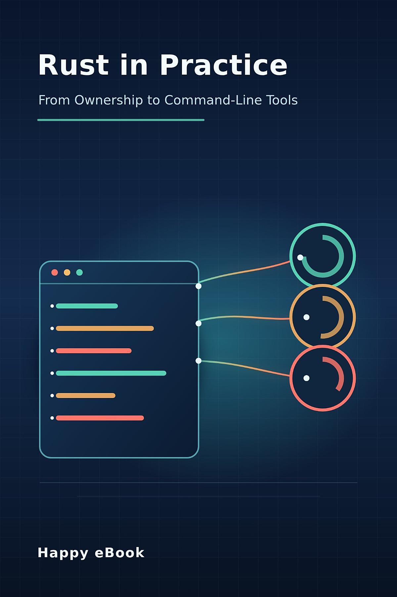

Rust in Practice
From Ownership to Command-Line Tools

Rust in Practice
From Ownership to Command-Line Tools
Rust in Practice is for readers who understand basic programming concepts and want to learn Rust for the first time. Through one small command-line text log analyzer, the book introduces types, ownership, moves, borrowing, structs, enums, vectors, Option, Result, modules, file input, error reporting, and testing. Rather than presenting disconnected syntax examples, the book evolves the same rust-log-summary project chapter by chapter. You will begin with Cargo and fixed data, organize the program around a data model, parse text files, report failures clearly, split code into modules, and finish with a tested command-line interface. The examples use synthetic data and require no external service account or paid subscription.